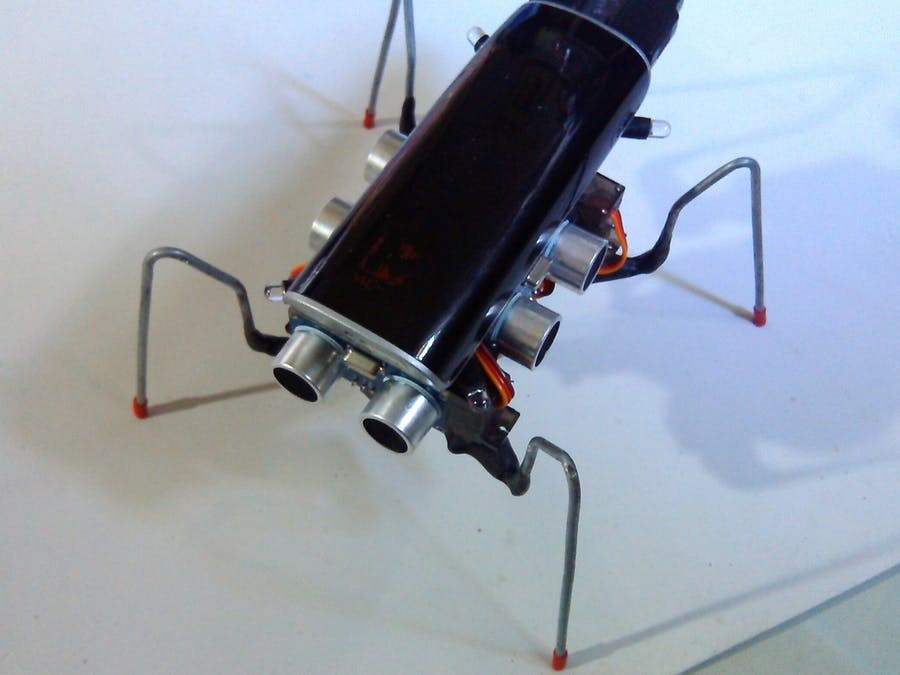
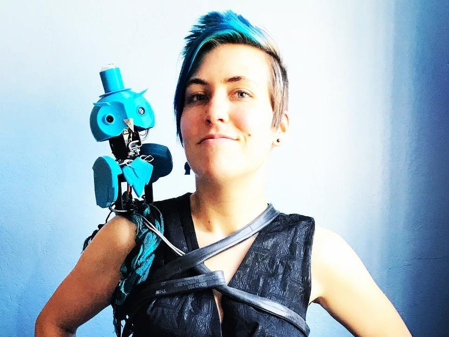

Research
Robotic Creatures
Gemaakt door: Ruiz Brothers
Dit project zijn 3d geprinte beestjes, die bewegen op een platform. Het klinkt heel vaag en heeft volgens mij ook niet echt een doel behalve dat het er gaaf uit ziet. Ik vind het er heel leuk uitzien hoe de beestjes echt bewegen als of het echt is en niet een 3d geprint ding. Er zijn verschillende versies van: een vis, een zeester en een octopus. De beestjes bewegen door dat er magneten zitten onder het platform die zie aanstuurt en daarom bewegen ze. Het platform geeft licht dus dat geeft een heel leuk effect. A helemaal als het beestje in het water zit.
linkWalter
Gemaakt door:Martedi
Walter is een robot insect. Hij heeft vier benen en loopt overal naar toe. Met behulp van servomotors kan hij lopen en door een aantal ultrasonic sensors knalt Walter nergens tegen aan. Hij werkt eigenlijk een beetje als een gewoon diertje, aangezien hij pauze neemt wanneer hij daar zelf zin in heeft. Ook past hij soms random zijn snelheid aan. Daarnaast net als een normaal insect wordt Walter aangetrokken tot licht, dus als je een zaklamp schijnt bij hem in de buurt, zal hij daar naar toe lopen. Ik vind dit een super geestig en schattig project. Het doet me eigenlijk een beetje denken aan een roomba, maar een roomba heeft een doel om je huis schoon te zuigen. Walter houdt gewoon van rondlopen.
linkArchimedes
Gemaakt door: Alex Glow
Archimedes is een uil robot die je emoties kan voelen en maakt daarbij ook een geluidje. Archimedes is eigenlijk ook een soort wearable, omdat je hem draagt op je schouder. Hij is gemaakt met Google AIY Vision Kit. Zijn hoofd is gemaakt met een 3D printer en hij beweegt als een echte uil. Ik vind dat hier erg leuk gebruik is gemaakt van hoe je iemands emoties kan peilen, maar het zit er dan ook nog eens leuk uit. Als je enthousiast genoeg Archimedes benadert krijg je ook nog eens een sticker. Ik vind het gewoon erg grappig hoe de uil dan ook nog eens zelf kan meten of je enthousiast genoeg bent.
linkTinkering
UE4duino
Ik was benieuwd of je arduino kon koppelen aan Unreal Engine. Ik heb toen een plug in gevonden genaamd ue4duino. Dankzij deze plug in heb je extra nodes die je kan gebruiken. Na het volgen van een tutorial heb ik een code geschreven. Met deze code als je op 1 drukt in de seriële monitor, gaat het lampje aan op de arduino, en als je op 0 drukt gaat het lampje uit. Daarnaast heb ik de tekst 'hey' en 'doei' er aan gekoppeld, zodat ik kon checken of het werkte. Dit heb ik in unreal engine gekoppeld aan een trigger box. Dus als je over de trigger box loopt, gaat het lampje aan en als je de trigger box verlaat gaat het lampje uit.
Mijn code
Adobe Aero
Ik had tijdens de challenge van AR/VR al gekeken naar Adobe Aero en wilde daar nu verder op in gaan, zodat ik het misschien voor deze challenge kon gebruiken. Ik wilde graag een animatie in AR hebben, dus ik heb drie frames gemaakt van een hoofdje wat eerst verdrietig kijkt, naar een blij hoofdje. In Aero lukte het eerst niet om de animatie af te spelen dus ik moest toen improviseren. Ik heb de drie frames los geïmporteerd in Aero en ze over elkaar geplaatst. Daarna heb ik ze zo geanimeerd dat ze los van elkaar verdwijnen en verschijnen en zo dus de gezichtsuitdrukking veranderd.
Rijden met Servomotor
Tijdens de research fase kwam ik een project tegen genaamd Walter, een wandelend insect robot. Het leek me leuk om met de twee servomotoren in de kit ook een lopend beestje te hebben. Ik heb met ijzerdraad de benen gemaakt, en kwam er toen al gauw achter dat het dus voor geen meter werkte. De benen bewogen alle kanten op, behalve de juiste. Ik heb toen besloten om het te laten rijden. Een propeller van de servomotor paste precies in één van de rollen washitape. Ik gebruikte de propeller als een soort spaken van een fiets. Om de servomotor mee te laten rollen, heb ik een rol ook om de servomotor gedaan en kan het dus rijden.
Mijn code
Design & Build
Tijdens de tinkering fase, kwam ik erachter hoe je Arduino kon koppelen aan Unreal Engine. Ik wilde er graag meer mee doen, dus ik heb er een soort game van gemaakt. Ik heb van papier een hoofd gemaakt, met drie gaten erin. Twee voor de lampjes van de ogen en een groter gat waar de led matrix precies inpast als mond. De ogen hebben niet echt een functie, maar de mond kan veranderen. In Unreal Engine heb ik een korte game gemaakt, een soort parkoers. Er zijn appels te verzamelen en als er een appel verzameld is gaat de mond van de LED matrix open en dicht.
Ik denk dat dit concept bij Artificial Creatures past, omdat ik letterlijk een creature heb gemaakt die reageert op wat je doet in de game.
Mijn code
Reflect
Artificial Creatures is een onderwerp, waar ik persoonlijk minder goed beeld bij heb dan wearables en VR/AR. Ondanks dat denk ik wel dat het in de toekomst veel gebruikt gaat worden. Alles wordt natuurlijk steeds meer digitaal, maar met het onderwerp van artificial creatures is er ook nog ruimte voor fysieke technologie, dan alles wat slechts op een scherm bevindt.
Ik ben tevreden met het concept wat ik heb gemaakt, dat zowel fysiek als op een scherm zich afspeelt. Het enige wat ik wat minder vindt, is dat het hoofd, dat ik met arduino heb gemaakt, vrij eng is geworden. Dat was totaal niet de bedoeling. Ik wilde meer een schattig concept, maar door de mix van papier en lampjes, wordt het een beetje beangstigend.
Ik vond het best leuk om met zowel arduino als met unreal engine te werken voor dit concept. Hoewel ik het allebei nog vrij ingewikkeld vind, gaat het wel steeds soepeler. Dit merk ik vooral met arduino dat ik steeds iets sneller iets in elkaar zet en dat ik langzaam de logica er van begin in te zien. Toch denk ik dat ik het altijd moeilijk blijf vinden, aangezien dit onderwerp gewoonweg niet helemaal mijn ding is.